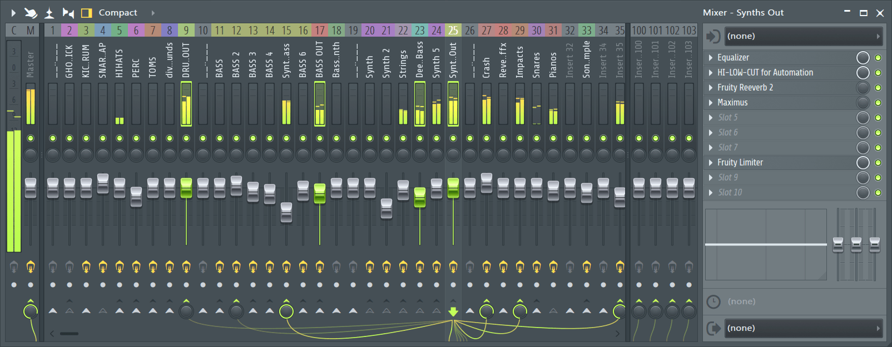
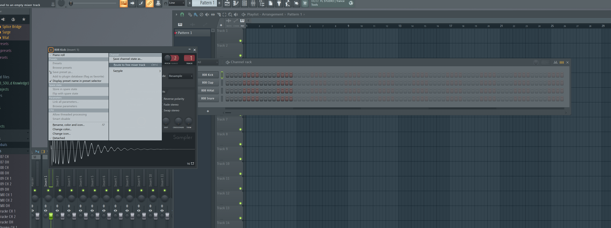
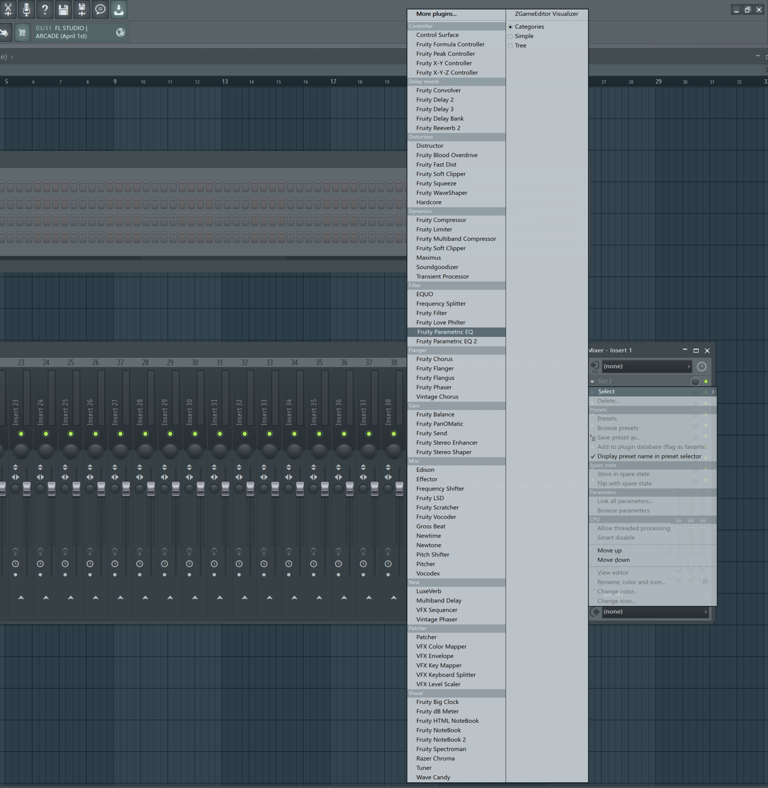

To begin understanding the use of mixing tools, you must first understand what the mixer is. The mixer is basically a bank of all of your sounds in the project. From here you can change the volume levels of each individual layer, add mixing tools and effects such as reverb and delay, and even route one sound to another.
The first step to take here is to route a sound to the mixer. With whatever VST or sound you are using, click in the upper left corner of the window and then click on "route to free mixing track." From here we can go back to the mixer and begin experimenting with the mixing tools!
There are so many different mixing effects that we can use now! On the very right side of the mixing board we can see the mixer inserts. From there click on slot 1 and choose whichever effect you would like to add. I reccomend looping whichever part you are adding it to and playing with the effect until you get a sound that you like!
